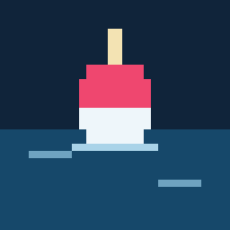

Sinoi the FishermanAn active, touch-first pixel-art fishing game set in the world of the #HusbandOutWorld series. Fight every fish with taps, slides, flicks and two-finger moves. Free, no ads, no in-app purchases, and open source.
A short-session fishing game you give your full attention for a few minutes, then put down. No idling, no timers, no gacha: every catch is earned by playing.
Fish are fought on a small trackpad-like box: trace the fish, tap and release on cue, flick against runs, spin to reel. A shadow copy above the box lets you see past your fingers.
Inspired by Stardew Valley's tackle system: the right bait decides what bites, and the right tackle is how you beat the hardest fish.
Fish the docks of Sanbi, the man-eating Fihi of Lukewarm Lake and the deep waters of the True Sanbi King, using the canon lore of the #HusbandOutWorld series.
One Godot project builds both the Android app and the browser version you can play on this site.
Right now this is a pre-production build: a title screen, placeholder catches, JSON save export and import, and a two-finger touch test of the fight box. The real game, with art by the project's illustrator, starts in Q1 2027.
No app store needed: the browser version installs like an app, opens straight into the game, and works with no signal after the first load. Good for players who'd rather not sideload an APK.
Tap Install app above, or open the game, then the browser menu (⋮) → Install app or Add to Home screen.
Open the game, tap Share → Add to Home Screen.
Updates arrive on their own: the next time you open the game online, it's the newest version. Your save stays on your device and carries over.
The game saves automatically in your browser (or on your phone). Saves never leave your device unless you export them.
Press Export save to download your save as a small .json file. Keep it as a backup or move it to another device.
Press Import save and pick a save file. The game checks it before loading, and refuses files from newer versions.
Clearing site data for this page deletes the browser save. Export first if you want to keep it.
This is an open-source project, built in the open with Claude agents under the direction of the author. Everything that shapes the game is in the repository.
Brought to you by Deovandski, author of the #HusbandOutWorld series and CEO/Founder of Wizard Deo Solutions. Have fun! If you want to support me, buy the eBooks on Amazon, or host a West March D&D campaign using the World Lore.